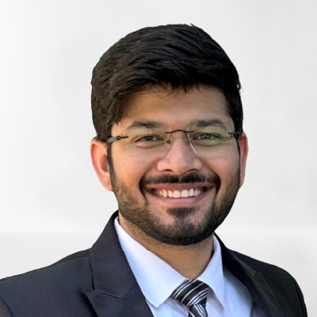

I'm a Cloud Software Development Engineer at Intel Corporation, where I build scalable and performant infrastructure for AI workloads on bare-metal GPU clusters. My recent work includes Kubernetes-native systems, distributed services, and developer productivity tooling within the Intel Developer Cloud (IDC) team.
I earned my Master's in Computer Science from The University of Texas at Dallas, and completed my undergraduate studies at IIIT Kota, India. During my academic journey, I interned at both Intel Corporation and Samsung SDS, contributing to systems software and DevOps automation across global infrastructure teams.
My engineering toolkit includes Golang, Python, Java, distributed systems, observability tooling, and cloud-native stacks like Kubernetes, Terraform, and AWS/GCP. I've designed CI/CD pipelines, microservices, and GPU cluster validation platforms that support AI research and large-scale inference.
Beyond industry, I’ve contributed to research in Machine Learning and AIoT, with published work in blockchain consensus models and the early detection of learning disabilities like Dysgraphia. These collaborations were supported by academic grants and led by professors at IIIT and UTD.
Outside work, I enjoy reading non-fiction, hitting the badminton court, and listening to deep, idea-driven podcasts. You’ll often find me taking notes on @naval during quiet hours.
I'm passionately exploring the intersection of AI and Compute. In terms of leisure, I am an avid badminton player, a podcast enthusiast, and a fan of non-fiction literature. One of my favorite things to do is listen to the wisdom shared by @naval during my downtime.
My recent (ish) research publications include:
I also write (Not often though). Some of my blogs include:
Here are some other places you can find me: